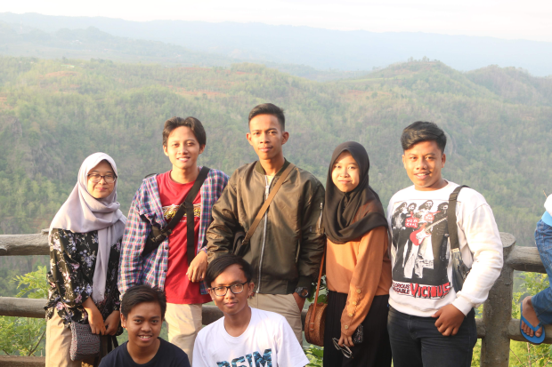
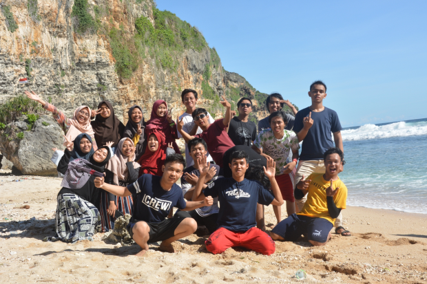
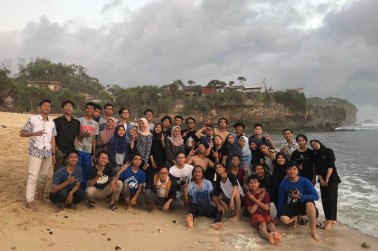

Air Terjun Kedung Kayang memiliki tinggi sekitar 40 meter dengan volume air yang cukup besar. Objek wisata alam ini berada di ketinggian lebih kurang 1.200 meter di atas permukaan laut. Untuk bisa sampai ke lokasi air terjun pengunjung harus jalan kaki.
Keindahan air terjun ini bisa dinikmati dari berbagai sisi. Baik dari atas, samping atau depan. Suasana di lokasi air terjun sendiri tidak terlalu ramai sehingga pengunjung bisa menikmati kesegaran alam dengan lebih leluasa.
Air yang jatuh dari air terjun ini mengalir ke sebuah sungai kecil berbatu. Pengunjung bisa masuk ke kolam, bermain air di bawah guyuran air terjun. Air Terjun Kedung Kayang ini tak pernah surut atau berkurang debitnya, sekalipun di puncak musim kemarau.
Puncak Mangunan

Puncak Bukit Mangunan merupakan salah satu pilihan utama menikmati matahari terbit atau sunrise dari atas bukit di sekitar wilayah Bantul dan Yogyakarta. Pemandangan yang ditawarkan tempat ini cukup indah dengan latar pemandangan aliran Sungai Oyo yang bekelok-kelok berbentuk huruf “S” dan kabut ytebal yang membuat suasana seperti diatas awan. Tidak heran bila bukit ini dikenal sebagai negeri diatas awannya Jogja atau Bantul.
Rute menuju Bukit Mangunan Bantul cukup mudah dengan mengikuti petunjuk arah menuju Kebun Buah Mangunan yang banyak ditemukan di beberapa persimpangan jalan. Bila masih bingung ikuti Jalan Imogiri Timur yang berada di sebelah selatan Terminal Giwangan hingga menemukan pertigaan jalan tanpa lampu lalulintas.
Pantai Ngrumput

Sebagian orang mungkin akan mengernyitkan dahi saat mendengar nama Pantai Ngrumput. Beda halnya, saat mendengar nama Pantai paling popular di Yogyakarta, Parangtritis. Dilihat dari namanya saja, Pantai Ngrumput memang kalah pamor dengan Parangtritis. Namun, urusan eksotisme, pantai yang terletak di Gunung Kidul itu tak bisa disepelekan begitu saja.
Karena belum begitu dikenal oleh masyarakat, pantai ini seolah belum terjamah. Sehingga keindahan alamnya masih alami dan juga bersih karena terhindar dari sampah. Selain itu wisatawan yang datang kemari bisa merasakan memiliki pantai pribadi karena masih sepi pengunjung.
Pantai Watukodok

Pantai Watu Kodok merupakan salah satu pantai yang ada di Gunung Kidul. Pantai Watu Kodok ini memiliki pasir putih dan air laut yang masih berwarna biru yang sangat indah. Di pantai ini terdapat beberapa batu karang yang terjal, batu tersebut menjadi daya tarik para wisatawan dan keunikan bagi pantai itu sendiri.
Pemandangan yang ada di Pantai Watu Kodok sangat menarik dengan suara ombak yang ada di bibir pantai bersama angin sepoi yang berhembus, pemandangan tersebut sangat cocok dinikmati ketika senja tiba. Selain itu di pantai ini juga terdapat wisata kuliner khas pantai ini. Kuliner seafood yang ada di Pantai Watu Kodok ini relatif murah dan akan membuat anda katagihan.